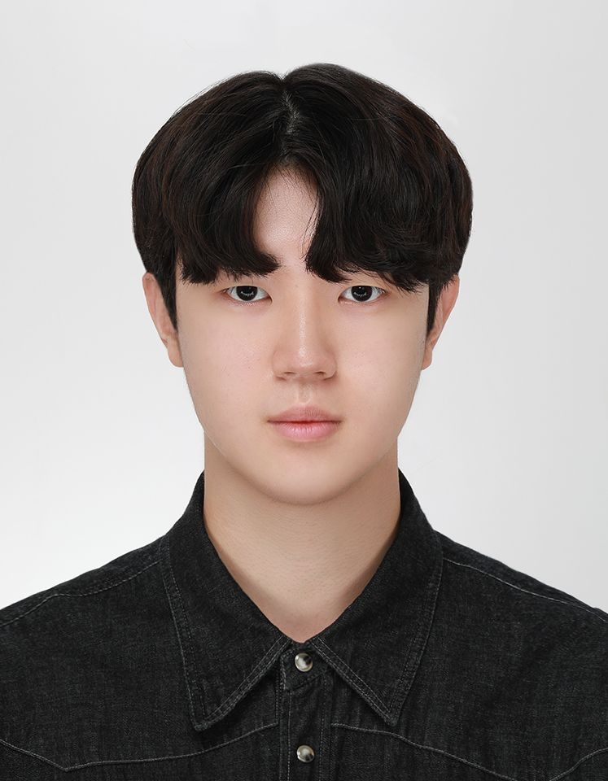
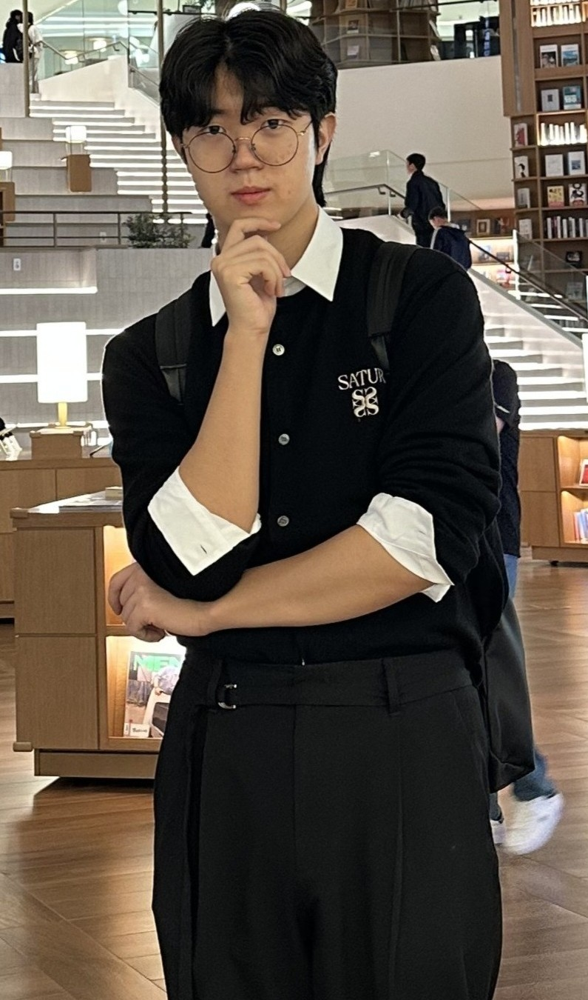

My Projects
A selection of my range of projects
Game Designer/Player

Focused on core C++ concepts including pointers, class design, and memory management over two semesters. Implemented various console applications and game features based on Object-Oriented Design.
Experienced in implementing custom game loops consisting of input handling, updating, and rendering. Developed specialized systems like object managers and frame-based processing for 2D games built from scratch.
Applied linear algebra and trigonometry to game development, including transformation matrices, vector operations, and collision detection. Proficient in integrating mathematical functions into core game systems.
Aspiring Game Developer based in Daegu, building expertise in programming and interactive systems.
I am a student at DigiPen-Keimyung University, where I study C/C++, Vectors, and Calculus through a rigorous curriculum. I enjoy collaborating with teammates to develop games over semester-long projects.
I am deeply passionate about game design and love discussing mechanics and player experiences with fellow enthusiasts. My goal is to create immersive games that challenge and inspire players.

A selection of my range of projects
Programmer, The Last Track
(Oct 2024 - Dec 2024)
A 3D adventure puzzle game where players must solve puzzles and escape a runaway train. Developed using C++ and Visual Studio, implementing interaction systems, password inputs, and level transition structures.
Producer & System Programmer, Beast Crossing
(Mar 2025 - Jun 2025)
A 2-player turn-based strategy game featuring resource collection, castle building, and a Rock-Paper-Scissors combat system. Developed turn managers and combat logic using C++, the CS230 engine, and Raylib.
Designer, Crevasse
(Jun 2025)
A 3D adventure puzzle game built with Unreal Engine 5. Implemented jump physics, temperature-based survival mechanics, and interaction-based item systems using C++ and Blueprints.
Class Representative, DigiPen Game Engineering
(Mar 2024 - Present)
Organized department game jams and proposed a mentor-mentee team-building initiative to encourage participation from students with varying experience levels.
Keimyung University - DigiPen Game Engineering
(2024 - Present)
B.S. in Real-Time Interactive Simulation